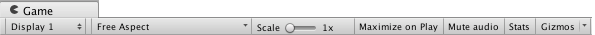

The Game view

The Game View is rendered from the Camera(s) in your game. It is representative of your final, published game. You will need to use one or more Cameras to control what the player actually sees when they are playing your game. For more information about Cameras, please view the Camera Component page.
Play mode

Use the buttons in the Toolbar to control the Editor Play Mode and see how your published game plays. While in Play Mode, any changes you make are temporary, and will be reset when you exit Play Mode. The Editor UI darkens to remind you of this.
Game view Control Bar

| Button | Function | |
|---|---|---|
| Display | Click this to choose from a list of Cameras if you have multiple Cameras in the Scene. This is set to Display 1 by default. (You can assign Displays to cameras in the Camera module, under the Target Display drop-down menu.) | |
| Aspect | Select different values to test how your game will look on monitors with different aspect ratios. This is set to Free Aspect by default. | |
| Low Resolution Aspect Ratios | Check this box if you want to emulate the pixel density of older displays: This reduces the resolution of the Game view when an aspect ratio is selected. It is always enabled when the Game view is on a non-Retina display. | |
| Scale slider | Scroll right to zoom in and examine areas of the Game screen in more detail. It also allows you to zoom out to see the entire screen where the device resolution is higher than the Game view window size. You can also use the scroll wheel and middle mouse button to do this while the game is stopped or paused. | |
| Maximize on Play | Click to enable: Use this to make the Game view maximize (100% of your Editor Window) for a full-screen preview when you enter Play Mode. | |
| Mute audio | Click to enable: Use this to mute any in-game audio when you enter Play Mode. | |
| Stats | Click this to toggle the Statistics overlay, which contains Rendering Statistics about your game's audio and graphics. This is very useful for monitoring the performance of your game while in Play Mode. | |
| Gizmos | Click this to toggle the visibility of Gizmos. To only see certain types of Gizmo during Play Mode, click the drop-down arrow next to the word Gizmos and only check the boxes of the Gizmo types you want to see. (See Gizmos Options below.) |
Gizmos menu
The Gizmos Menu contains lots of options for how objects, icons, and gizmos are displayed. This menu is available in both the Scene view and the Game view. See documentation on the Gizmos Menu for more information.
Advanced options
Right-click the Game tab to display advanced Game View options.

Warn if No Cameras Rendering: This option is enabled by default: It causes a warning to be displayed if no Cameras are rendering to the screen. This is useful for diagnosing problems such as accidentally deleting or disabling a Camera. Leave this enabled unless you are intentionally not using Cameras to render your game.
Clear Every Frame in Edit Mode: This option is enabled by default: It causes the Game view to be cleared every frame when your game is not playing. This prevents smearing effects while you are configuring your game. Leave this enabled unless you are depending on the previous frame’s contents when not in Play Mode.